Visualização de arquitetura com Blender
O presente texto foi escrito em colaboração com a artista 3D Joana Soares. Todas as imagens são da sua autoria.
Ideias iniciais
1. Existem vários motores de renderização que podem ser utilizados para criar visualização de arquitetura com o Blender mas nem todos são Software Livre. O Cycles é Software Livre e já vem integrado de origem no Blender, o que o torna uma das melhores opções. O LuxRender é outra excelente opção de Software Livre mas implica algum esforço adicional.
2. Na visualização de arquitetura, é sempre desejável seguir medidas reais. Sugere-se fortemente a utilização do sistema métrico no Blender.

3. Existem vários addons bastante úteis que permitem expandir as funcionalidades do Blender nesta área de criação. Alguns já existem no Blender mas não estão inicialmente ativos, outros têm de ser instalados antes de serem ativados. Segue-se uma lista de alguns dos mais úteis:
- Import Images as Planes (basta ativar)
- Edit Linked Library (basta ativar)
- Geographical Sun (basta ativar)
- Measure Panel (basta ativar). Na imagem abaixo é possível ver alguma da informação fornecida pelo Measure Panel. 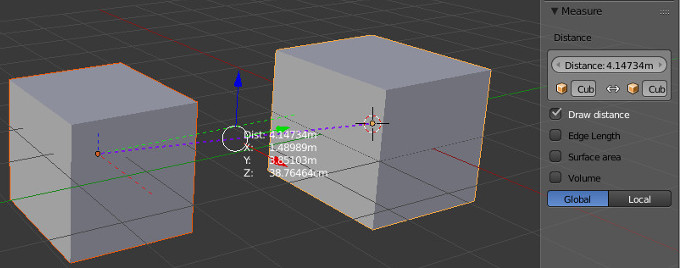
- IES Lamps to Cycles Download
- Archimesh Download
- Blender Window Generator 2 Download
- Floor Board Generator Download
- Jamb Generator Download
- Balcony Generator Script Download
Introdução: Iluminação Realista
Para a criação de uma boa iluminação, no contexto de renderização fotorrealista de interiores e exteriores, é sempre bom ponto de partida tentar simular as condições do mundo real, tentando desta forma recriar condições de iluminação mais credíveis e familiares para o público.
Neste contexto, importa destacar a iluminação global (Global Illumination, GI) enquanto ferramenta extremamente útil para obter uma iluminação realista. A GI é um conjunto de técnicas utilizado em 3D para calcular todas as interações de luz possíveis entre as superfícies numa cena, tendo em conta a luz proveniente de origens distintas/específicas (iluminação direta) e a luz proveniente dos raios refletidos nas superfícies existentes na cena (iluminação indireta). A GI simula a interação da luz no mundo real, através da distribuição uniforme de diferentes valores de cor e de luz, sendo que os raios de luz interagem com os objetos com os quais entram em contato, refletindo a luz de forma diferente e criando sombras de acordo.
Iluminação exterior
Geralmente, as cenas exteriores são bastante simples de iluminar pois é comum não precisarem de muitas fontes de iluminação. Normalmente, uma cena exterior precisa apenas de um sol e da luz proveniente do céu. Utiliza-se a iluminação global, com uma textura de imagem para influenciar a iluminação geral da cena (recomenda-se uma HDRI), e, posteriormente, adiciona-se uma luz do tipo sol para complementar a iluminação e estabelecer a direção da luz e das sombras.
Exemplo 1
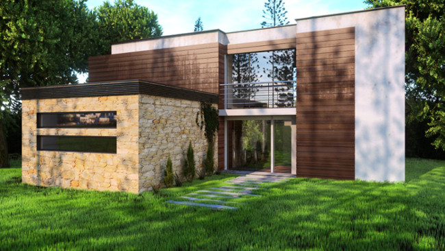Para a iluminação da cena apresentada acima, comecei por inserir a iluminação global. No painel World, inseri uma "Environment Texture" e ajustei a respetiva intensidade (Strength) tendo em conta o nível de iluminação que procurava. Após alguns testes, o valor 3.5 revelou-se o mais indicado.
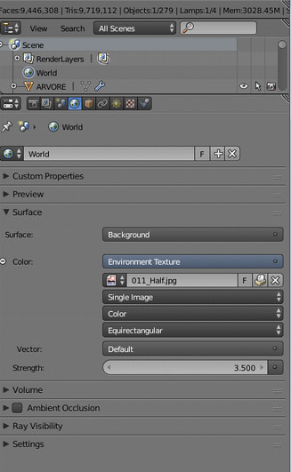Em baixo, é apresentada uma amostra da imagem utilizada como "Environment Texture".
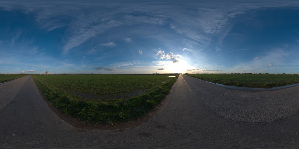A segunda etapa foi o adicionar de um sol à cena. Posicionei-o da forma que considerei mais interessante, tentando obter sombras e uma iluminação mais apelativa. Posteriormente, alterei ligeiramente a cor do sol para obter uma tonalidade mais quente na imagem final. Finalmente, ajustei a força da luz alterando a "Strengh"para 7.0.
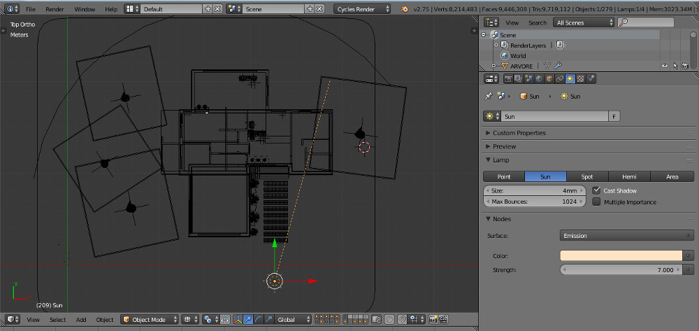Na minha opinião, o processo de iluminação de uma cena é algo intuitivo. Podemos seguir estes princípios de iluminação para uma cena exterior mas não existe uma fórmula exata para obter os resultados desejados. A melhor forma de obter a iluminação que procura é através da observação e experimentação. Nesse sentido, após definido o layout e implementada a iluminação base da cena, é sempre útil pré-visualizar em "render view" e ajustar os valores das intensidades e cores.
Iluminação interior
Exemplo 1
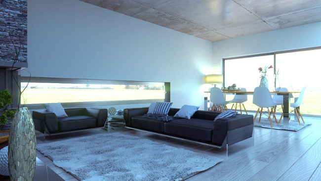Neste exemplo, optei por usar a iluminação exterior com fonte de iluminação principal para a cena.
Nesse sentido, utilizei novamente uma "Environment Texture" (desta vez utilizei uma HDRI) e ajustei novamente a intensidade (Strength) da luz. Após alguns testes, o valor 50 pareceu-me o mais indicado para o tipo de iluminação que procurava.
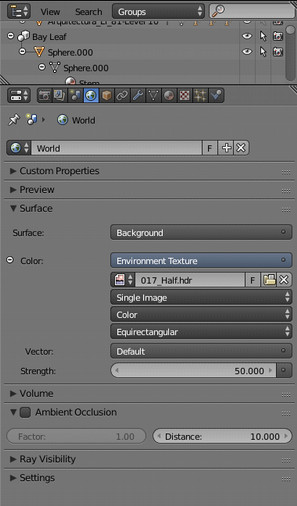Em baixo, é apresentada uma amostra da imagem utilizada como "Environment Texture".
Para a iluminação artificial do candeeiro no canto, utilizei uma esfera no interior do candeeiro para simular a iluminação de uma lâmpada. Usei um material (shader) do tipo Emission e alterei a sua intensidade (Strength) para 9 de forma a obter o impacto desejado. Escolhi um tom alaranjado forte para melhor simular o aspeto de uma lâmpada amarela.
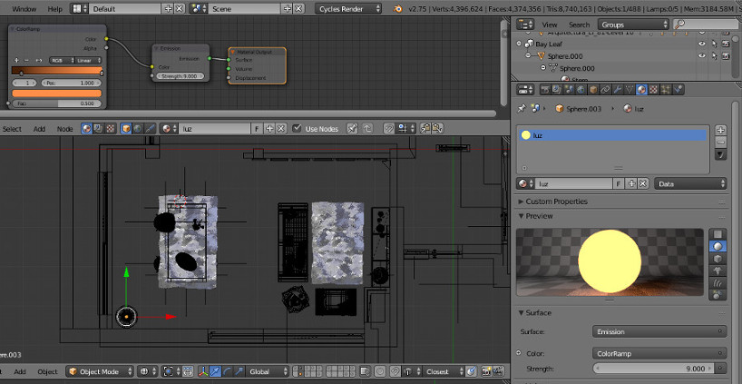Paralelamente, adicionei ainda uma luz tipo Point, com intensidade de 40, para expandir a iluminação na direcção desejada.
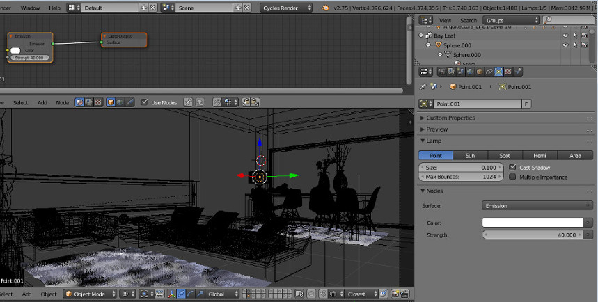Exemplo 2
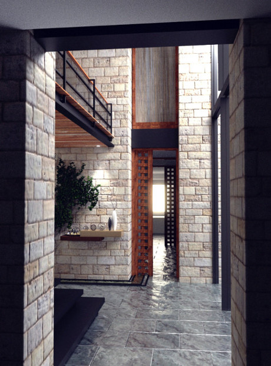No exemplo acima, a iluminação é também primordialmente exterior. No entanto, neste exemplo, não uso nenhuma "Environment Texture". A iluminação é realizada através de planos com material Emission posicionados em pontos diferentes.
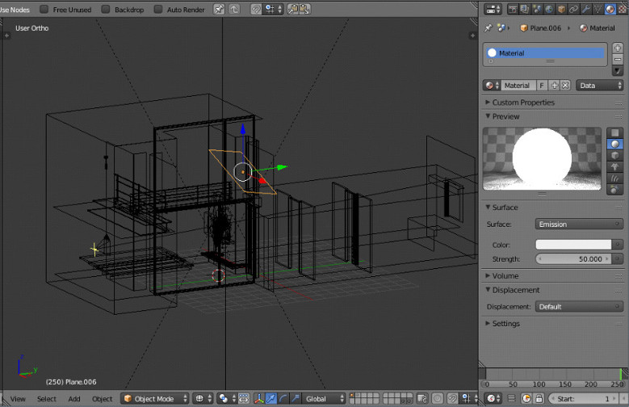Para a iluminação proveniente das janelas grandes à direita, utilizei um plano inclinado na direção do solo, de forma a simular a direção dos raios solares. O plano tem um material Emission com 50 de Strength.
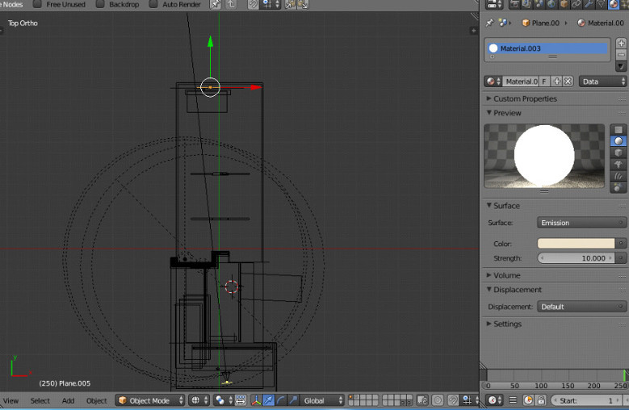Para a janela existente no fundo do corredor, utilizei novamente um plano e posicionei-o no local onde estaria o vidro da janela. Este plano tem material Emission com 10 de Strength 10 e alterei ligeiramente a cor do material de modo a aquecer um pouco a luz.
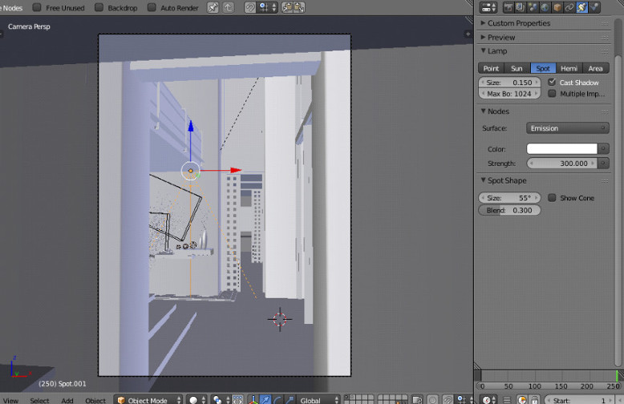Para terminar, adicionei uma luz do tipo Spot para recriar a iluminação de um foco de luz artificial.